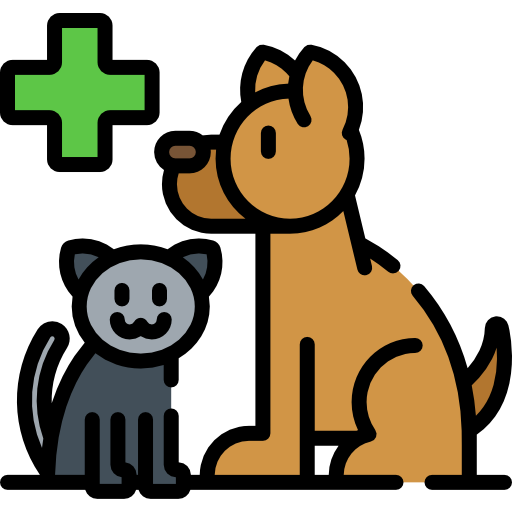
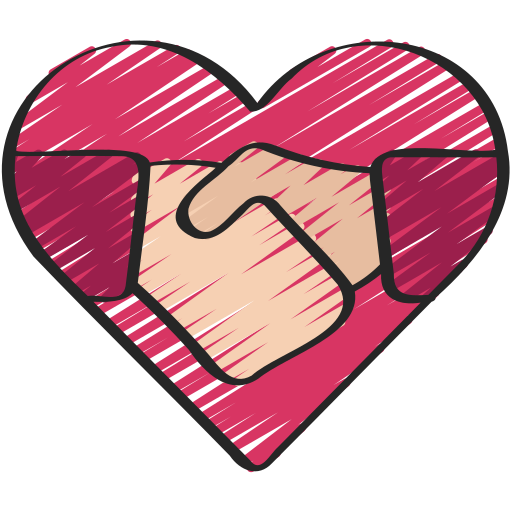

Sobre o Helpet
O site Helpet é dedicado ao bem estar, resgate dos animais de rua à fornecer um lar e uma adoção responsável para cada um deles. Há também um blog ativo que compartilha histórias inspiradoras de resgate de animais e fornece recursos e conselhos para donos de animais responsáveis.
|  | AdoçãoO processo de tirar um animal de estimação de um resgate ou abrigo de animais e fornecer-lhes permanentemente um lar. |
PraticidadeUsuários não precisam se registrarem para poderem ver os pets disponíveis para adoção. |
|
|  | VoluntariedadeUsuários podem postar animais em situação de rua, falando suas características, local de onde se encontra e estado de saúde para outros usuários adotarem. |
 |
DoaçãoArrecadar dinheiro ou doações para financiar provisões específicas de resgate de animais, como cuidados médicos e alimentos. |